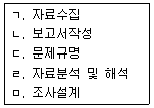
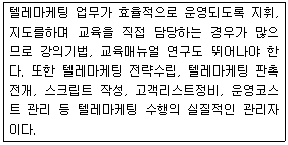
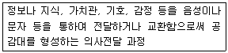
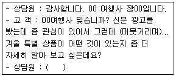

1과목: 판매관리
1. 데이터베이스는 크게 고객속성과 거래속성으로 구분되는 데, 고객속성의 종류가 아닌 것은?
2. 아웃바운드 텔레마케팅의 활동내용과 거리가 먼 것은?
3. 자사의 제품을 적당한 장소에서 소비자가 편리하게 구매할 수 있도록 서비스 체계를 갖춘다는 의미의 마케팅 요소는?
4. 아웃바운드 텔레마케팅에서 전용상품을 개발할 경우 고려해야할 사항이 아닌 것은?
5. CRM에 대한 설명으로 올바르지 않은 것은?
6. 데이터베이스 마케팅에서 사용되는 RFM의 세가지 기준이 아닌 것은?
7. 아웃바운드 텔레마케팅의 전략적 활용방안 중 판매촉진의 방법으로 볼 수 있는 것은?
8. 텔레마케팅이 CRM과정에 기여하는 역할로 적합하지 않는 것은?
9. 고객 데이터베이스의 설계 및 활용 방안으로 적합하지 않은 것은?
10. Average Speed of Answer에 대한 설명으로 옳은 것은?
11. 용어에 대한 설명으로 틀린 것은?
12. 아웃바운드 텔레마케팅을 실행하기 위한 준비과정으로 틀린 것은?
13. 텔레마케팅에서 활용할 수 없는 데이터 베이스는 무엇인가?
14. 소비자 구매의사 결정에 관한 단계별 설명 중 잘못된 것은?
15. 아웃바운드 텔레마케팅의 특성으로 볼 수 없는 것은?
16. 데이터베이스 마케팅의 주요 장점이 아닌 것은?
17. 데이터베이스의 설계시 고려되어야 할 사항이 아닌 것은?
18. CRM을 위해 텔레마케팅을 활용할 때 고려해야할 점이 아닌것은?
19. 상담원이 콜을 처리할 수 있는 평균적인 서비스 수준 정도를 의미하는 것은?
20. 고객을 분류(시장세분화)하는 방법 중 옳은 것은?
21. 데이터 베이스 마케팅에 대한 설명 중 옳지 않은 것은?
22. 아웃바운드 텔레마케팅을 충실히 수행하기 위한 방법으로 적당하지 않는 것은?
23. 아웃바운드 텔레마케터의 자질로서 적합하지 않은 것은?
24. 데이터베이스마케팅의 목적이 아닌 것은?
25. 아웃바운드 텔레마케터가 갖추어야 할 가장 중요한 능력은 무엇인가?
2과목: 시장조사
26. 설문지작성에 있어서 조사자가 가장 먼저 결정해야 할 사항은?
27. 시장조사를 위한 절차를 바르게 연결한 것은?

28. 시장조사과정에서 문제에 대한 접근방법의 개발로써 조사의 목표를 확실히 해야 한다. 조사목표는 어떤 정보를 필요로 하는가에 대해 가능한 정확한 용어로 표현한 진술을 말하는데, 조사목표의 3가지 기본요소가 아닌 것은?
29. 시장조사의 특성에 해당하지 않는 것은?
30. 설문지를 작성할 때 반드시 포함시키지 않아도 되는 것은 ?
31. 질문지의 문항 형식 중에서 응답자가 자유롭게 응답을 하도록 하는 질문의 형태는?
32. 텔레마케터가 사전조사 시 응답자의 개방적 질문의 응답을 기록할 때 적절하지 않은 것은?
33. 전화 조사자로서 적합하지 못한 사람은?
34. 응답자들이 전화조사에 응하는 심리적인 동기요인이 아닌것은?
35. 일정기간 동안 구체적인 간격을 두고 정보를 제공하는데 동의한 응답자의 표본을 지칭하는 말로서 조사에 응답하는 댓가로 현금이나 선물, 쿠폰 등을 제공 받는다. 이들은 최근 온라인 전문조사기관들을 통해 대규모로 구성된다. 이들의 명칭은 무엇인가?
36. 의사소통수단에 의한 분류에 속하지 않는 것은?
37. 시장조사를 하고자 할 때 모집단으로부터 직접적으로 정보를 입수하는 조사방법은?
38. 시장조사는 시장문제를 예측 진단하거나, 나타난 문제해결을 위해 자료를 분석하는데 과학적 조사방법을 채택한다. 과학적 조사방법의 특성으로 옳지 않은 것은?
39. 시장조사를 통해 수집한 자료는 크게 1차 자료와 2차 자료로 구분할 수 있는데, 2차자료를 통해 시장조사를 진행했을 경우에 나타나는 문제점은?
40. 설문지의 작성에 있어 가장 중요한 것은?
41. 전화면접법의 장점에 대한 설명으로 옳은 것은?
42. 1차 자료 수집 계획이라고 할 수 없는 것은?
43. 시장조사 계획은 기본계획과 실시계획 두 가지로 나누어 생각 할 수 있다. 이 중에서 기본계획에 해당하는 것은?
44. 시장조사의 주체가 표본추출방법을 결정할 때 반드시 같이 결정해야 할 사항으로 조사비용 및 조사의 정확도와 가장 밀접한 관련성을 갖는 것은?
45. 시장조사 방법 중 자료를 수집하는데 빠르고 일반적으로 경비가 적게드는 방법은?
46. 전화조사방법의 특성을 옳게 설명한 것은?
47. 훈련된 면접진행자가 소수의 응답자들을 일정한 장소에 모이게 한 후, 비체계적이고 자연스러운 분위기 속에서 조사목적과 관련된 대화를 유도하여 응답자들이 자유롭게 의사를 표시하도록 하는 면접방식은?
48. 시장조사에 대한 설명으로 옳지 않은 것은?
49. 컴퓨터 지원 전화면접(CATI)으로 얻을 수 있는 장점이 아닌 것은?
50. 설문지의 초안이 완성된 후 조사대상이 되는 모든 계층의 응답자들에게 본 조사가 들어가기 전에 우선 간이조사를 실시하여 미리 문제점이 무엇인지 파악해 보는 절차를 무엇이라 하는가?
3과목: 텔레마케팅관리
51. 교환기 및 CTI 장비에서 측정할 수 없는 성과 지표는?
52. 성과 달성을 위한 목표 관리의 중점사항이 아닌 것은?
53. 콜센터의 생산성에 영향을 미치는 직접적 요인이 아닌 것은?
54. 콜센터 조직 구성원이 아닌 것은?
55. 콜센터 핵심 성과지표가 아닌 것은?
56. 텔레마케팅의 분류 중 틀린 것은?
57. 텔레마케팅 조직의 수퍼바이저의 역할에 대한 설명으로 옳지 않은 것은?
58. 콜센터의 역할로 옳지 않은 것은?
59. 텔레마커터를 OJT하기 위한 준비사항으로 틀린 것은?
60. 다음 업무를 수행하는 사람은?

61. 콜센터 기획 구성시 고려해야 할 점이 아닌 것은?
62. OJT를 위한 단계로 적합한 것은?
63. 고객서비스를 담당하고 있는 텔레마케터에게 필요한 능력이 아닌 것은?
64. 전문 텔레마케터가 되기 위한 기본자질에 해당 되지 않는 것은?
65. 텔레마케터에 대한 OJT시기로서 적절치 않는 것은?
66. 텔레마케터의 생산성을 향상하기 위한 노력으로 적합한 것은?
67. 텔레마케터의 관리자에게 필요한 리더십이 아닌것은?
68. 텔레마케팅에 대한 설명으로 맞는 것은?
69. 통화 품질 관리(QA)의 핵심 성공 요인으로 볼 수 없는 것은?
70. 텔레마케터의 역할로 보기 어려운 것은?
71. 텔레마케팅을 수행하기 위한 3가지 필수자료에 해당되지 않는것은?
72. 텔레마케터를 위해 필요한 교육 프로그램이 아닌 것은?
73. 모니터링의 평가항목에 들어가지 않는 것은?
74. 아웃바운드와 관계 있는 것은?
75. 콜센터의 활성화 방법으로 옳지 못한 것은?
4과목: 고객응대
76. 효과적인 고객응대는?
77. 고객과 이야기를 할 때 최적의 빠르기를 결정하는 요인과 거리가 먼 것은?
78. 인바운드 스크립트 구성요소가 아닌 것은?
79. 스크립트에 대한 설명이 적절하지 못한 것은?
80. 불만족한 고객을 응대하기 위한 상담기법이라고 볼 수 없는 것은?
81. 인바운드 상담을 잘하기 위한 기술(skill)에 관한 설명중 맞는 것은?
82. 고객 응대에 있어서 Moments Of Truth(결정적 순간, 진실의 순간)의 의미로 가장 적절한 것은?
83. 다음은 무엇에 대한 설명인가? 愷

84. 인바운드 고객상담의 개념에 대한 설명으로 옳지 않은 것은?
85. 상담을 잘 하기 위한 태도로 알맞은 것은?
86. 고객과 상담시 피해야 할 것은?
87. 텔레커뮤니케이션의 심리적 장애요소가 아닌 것은?
88. 텔레마케터로서 각각의 성격 유형을 극복하기 위한 방법으로 적절하지 않은 것은?
89. 고객 문의상담에 임하는 자세로 바르지 못한 경우는?
90. 콜센터에서의 우량고객에 대한 고객응대 방법으로 옳지 않은 것은?
91. 고객응대의 질을 향상시키는 핵심 요소로 부적절한 것은?
92. 텔레마케팅과 폰 세일즈의 차이점으로 옳지 않은 것은? (순서대로 ＜텔레마케팅＞/ ＜폰세일즈＞)
93. 행동유형별 특성에 대한 응대법 중 바른 것은?
94. 고객응대 단계와 관련된 응대 지침이 바르게 연결된 것은 ?
95. 다음은 모여행사에 전화를 걸어 온 고객과 상담원 장00씨가 나누는 대화의 일부분이다. ( )에 들어갈 수 있는 화법으로 가장 적절한 것은?

96. 전화상담 시 의사전달에 영향을 미치는 요소로 볼 수 없는 것은?
97. 전화응대로 가장 거리가 먼 것은?
98. 화법에 대한 설명 중 바르지 않은 것은?
99. 우수한 고객응대를 통한 기업의 이득이 아닌 것은?
100. 고객응대 서비스의 7C가 아닌 것은?